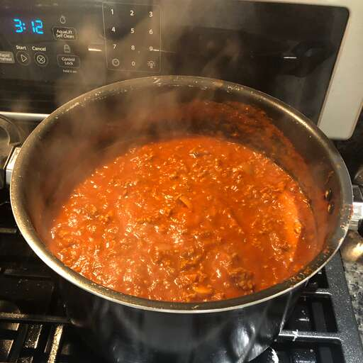

Old Italian Meat Sauce

This Italian meat sauce with mushrooms is robust and hearty. Serve over your favorite pasta with Parmesan cheese if desired.
Ingredients
- Two {2} pounds of lean ground beef
- One {1} pound of ground pork
- Two {2} tablespoons of olive oil
- Two {2} onions, chopped
- One {1} clove of garlic, crushed
- Three {3} cups of red wine, divided
- Two {2} pounds of fresh mushrooms, sliced
- Four {4} tablespoons of chopped fresh oregano
- One fourth {1/4} teaspoon of dried rosemary
- One fourth {1/4} teaspoon of chopped fresh thyme
- Three {3} (29 ounce) cans of tomato sauce
- One {1} (6 ounce) can of tomato paste
Steps
- This Italian meat sauce with mushrooms is robust and hearty. Serve over your favorite pasta with Parmesan cheese if desired.
- Warm olive oil in another large skillet over medium heat. Sauté onions and garlic in hot oil until onions are tender, about 5 minutes. Pour in 1/2 cup wine; mix well.
- Add mushrooms, oregano, rosemary, and thyme to onion mixture. Pour in another 1/2 cup wine; cook and stir until mushrooms are tender, about 5 minutes.
- Add browned meat, tomato sauce, and tomato paste to mushroom mixture. Reduce the heat and simmer for 1 hour.
- Pour in remaining 2 cups wine. Continue simmering for 2 to 3 hours, stirring occasionally; serve.